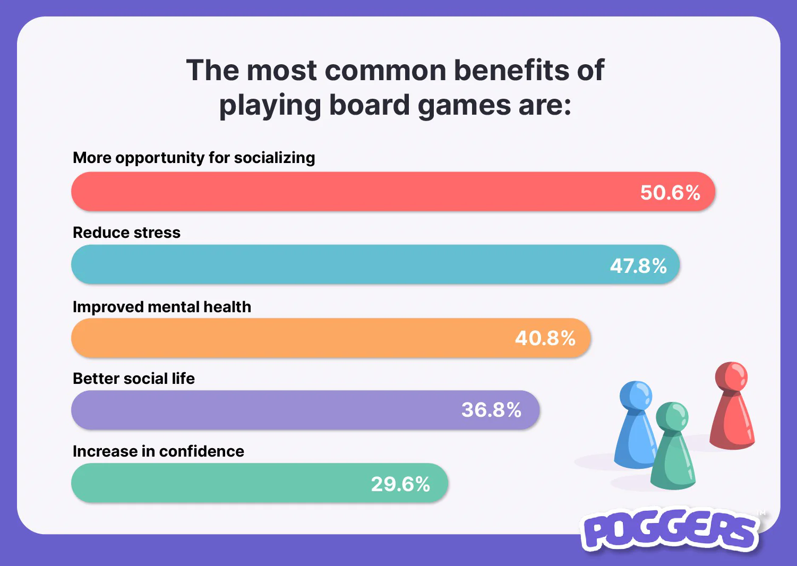
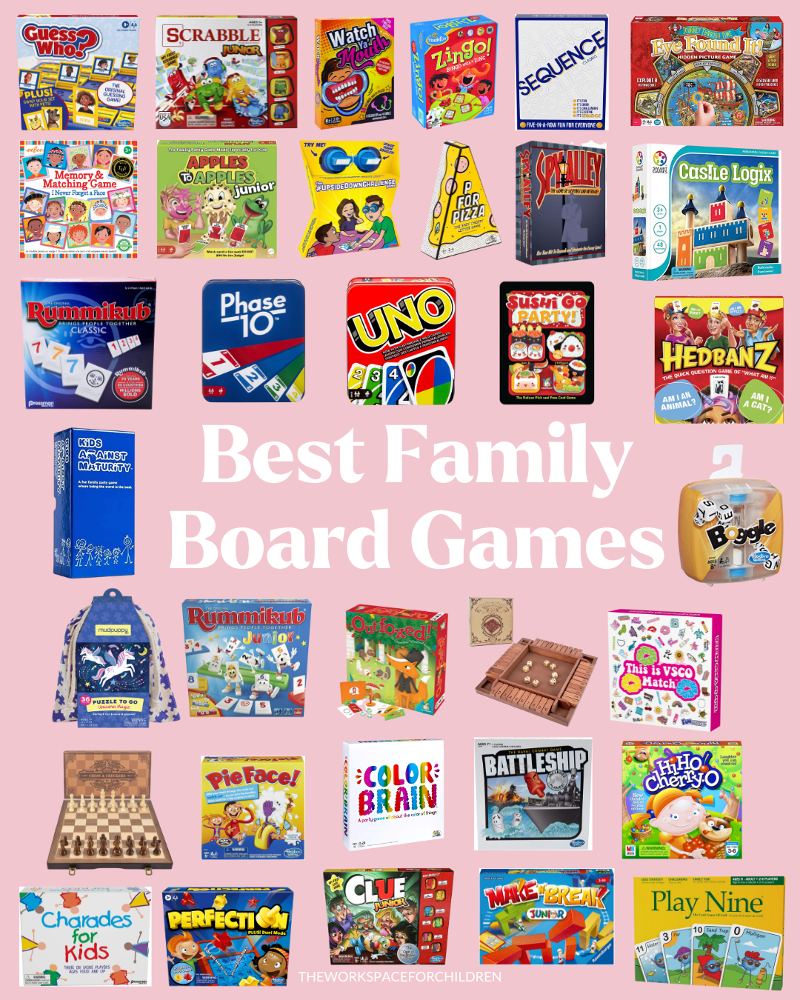
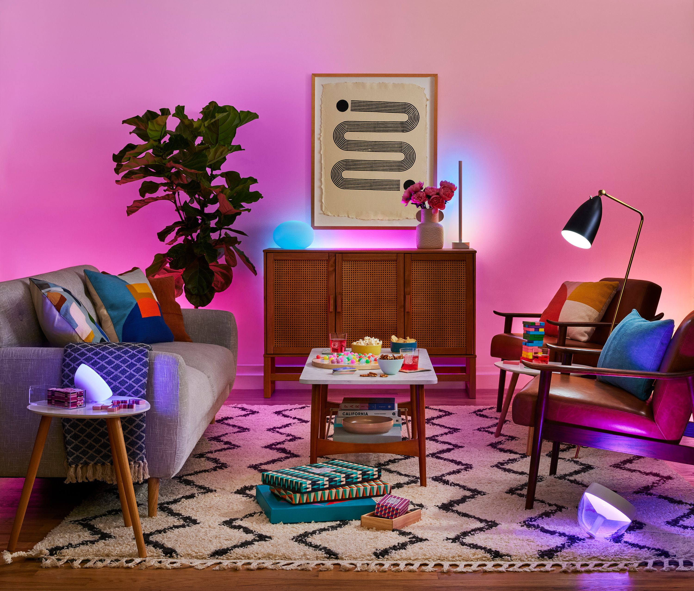

Why Board Games Are Making a Comeback

In a world dominated by screens and digital entertainment, board games are experiencing a renaissance. People are rediscovering the joy of sitting around a table, rolling dice, and engaging in friendly competition. Board games offer a unique blend of social interaction, strategy, and nostalgia that digital games simply can't replicate.
The Social Benefits of Board Games
Board games bring people together. Whether it's family game night or a gathering with friends, board games foster meaningful connections. They encourage face-to-face interaction, teamwork, and communication. In a time when many feel isolated, board games provide a much-needed opportunity to bond and create lasting memories.
Top Board Games to Try in 2024
Looking for some great board games to try? Here are a few recommendations:
- Catan: A classic strategy game of resource management and trading.
- Ticket to Ride: A fun and competitive game of building train routes across the map.
- Codenames: A word-based party game that challenges your communication skills.
- Wingspan: A beautifully designed game about bird-watching and habitat building.
How to Host the Perfect Game Night
Hosting a game night is easier than you think! Here are some tips to make it a success:
- Choose a variety of games to suit different interests and skill levels.
- Set the mood with cozy lighting, snacks, and drinks.
- Explain the rules clearly before starting each game.
- Encourage friendly competition and focus on having fun!